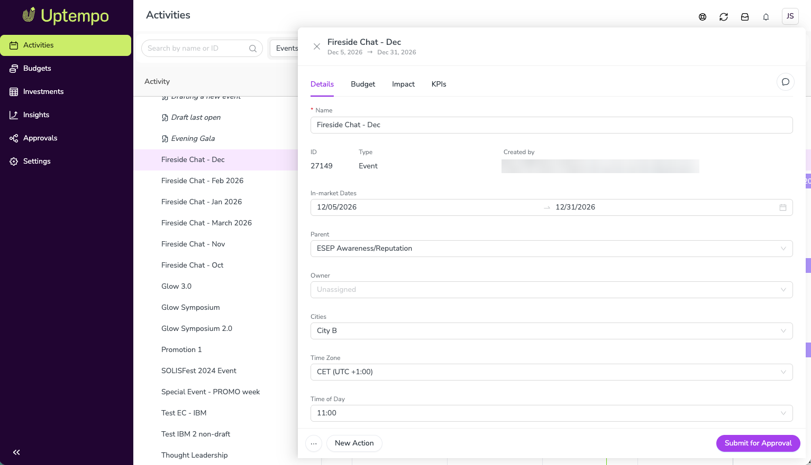
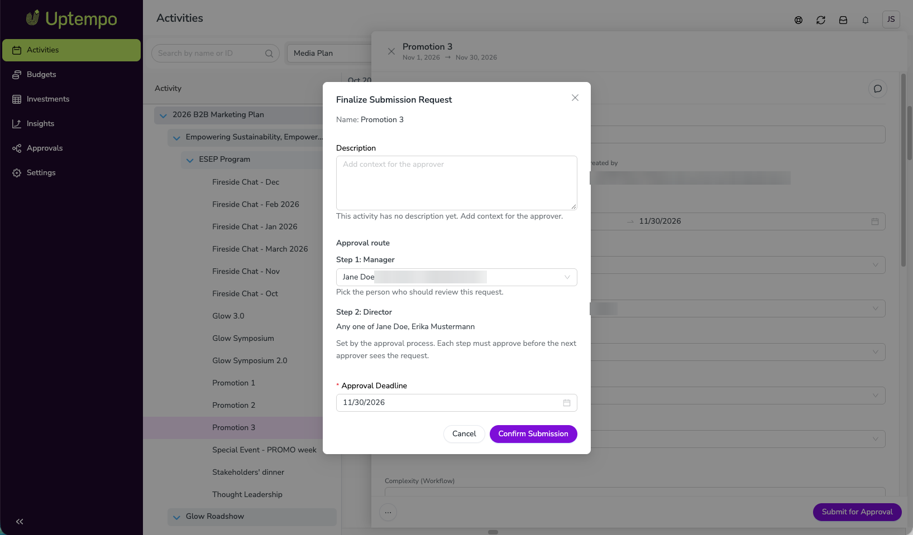

Submit activities for approval
You can submit an activity for approval when its activity type is covered by an active approval process. Each submission creates an approval request that the assigned approvers review on the Approvals page.
Before you begin
Activity approvals must be enabled in your Uptempo instance. This feature is in Preview; contact your Customer Success Manager to enable it.
The activity's type must be covered by an active approval process. If Submit for Approval isn't shown on an activity, its type isn't covered; contact your Campaign Management admin.
The activity can't already have a pending or approved request. If its request was denied, you can submit a new one (see Submit again after a denial).
How submission works
Who reviews your request
The approval process for the activity type decides who reviews your request. A process has one or more approval steps, and each step gets its approvers in one of three ways:
- Submitter
Approvers come from the process's submitter-to-approver mapping. They're assigned automatically based on who submits the request, and you can't change them. Any one of them can approve or deny that step.
- Activity owner
Approvers come from the process's activity owner-to-approver mapping. They're assigned automatically based on the activity's owner (the user in its Owner field), whoever submits the request. You can't change them. Any one of them can approve or deny that step.
- Selected by submitter
You choose one approver for the step when you submit. You can choose only users who can edit the activity.
When a process has more than one step, your request goes through the steps in order. Each step's approvers see the request only after the step before it is approved.
If a step has no eligible approver, for example because you or the activity owner aren't in its mapping, the step goes to the default approver. You can still submit the request.
If your approver isn't listed
On a step where you select the approver, the list shows only users who can edit the activity. If the approver you need isn't listed, they may not be in Uptempo yet, or may not have edit access to the activity.
Below the approver field, Can't find your approver? explains what to do next. Your admin may have customized this message, for example with a link to your organization's access request form. After the approver has access, return to the activity and submit the request.
Request description
The request description starts with the activity's own description. You can add more context for your approvers, such as what you need approved and why. Approvers see the description on the Approvals page.
After you submit
The request has the status Pending review, and the approvers for the first step get an email.
The activity shows who the request is waiting on and its due date, and Submit for Approval is unavailable.
You get an email when your request is approved or denied.
You can keep editing the activity while the request is pending. The approval covers the activity as it stands when the decision is made.
Submit an activity for approval
In the
 Activities section, click the activity you want to submit to open its details panel.
Activities section, click the activity you want to submit to open its details panel.At the bottom of the details panel, click Submit for Approval.

The Finalize Submission Request dialog opens.
Review the activity name shown at the top of the dialog.
Review the Description. It starts with the activity's description; add any context your approvers need.
Review the Approval route. It lists each step of the approval process in order, with its approvers:
For steps set by a mapping, the approvers are listed and can't be changed. Any one of them can approve the step.
For steps where you select the approver, select one (required). If the approver you need isn't listed, see If your approver isn't listed.

Set an Approval Deadline (required). The deadline can't be in the past, and it covers every step of the route.
Click Confirm Submission. Confirm Submission is available only after you select an approver for every step that needs one.


Your request is submitted with the status Pending review, and the approvers for the first step are notified by email.
Track your request
You can check the status of your request in two places:
On the activity: While the request is pending, the activity shows "Waiting for approval from" the current step's approvers and the due date. After approval, the activity shows that it's approved.
On the Approvals page: Find your request on the Pending review, Approved, or Denied tab. Click the request to open its details. The Approval history shows each step, who approved it and when, any approver comments, and which step is waiting for approval.
Submit again after a denial
If your request is denied, check the approver's comment in the request's approval history, update the activity, and submit it for approval again. Uptempo creates a new request that starts at the first step. The denied request stays on the Denied tab of the Approvals page.